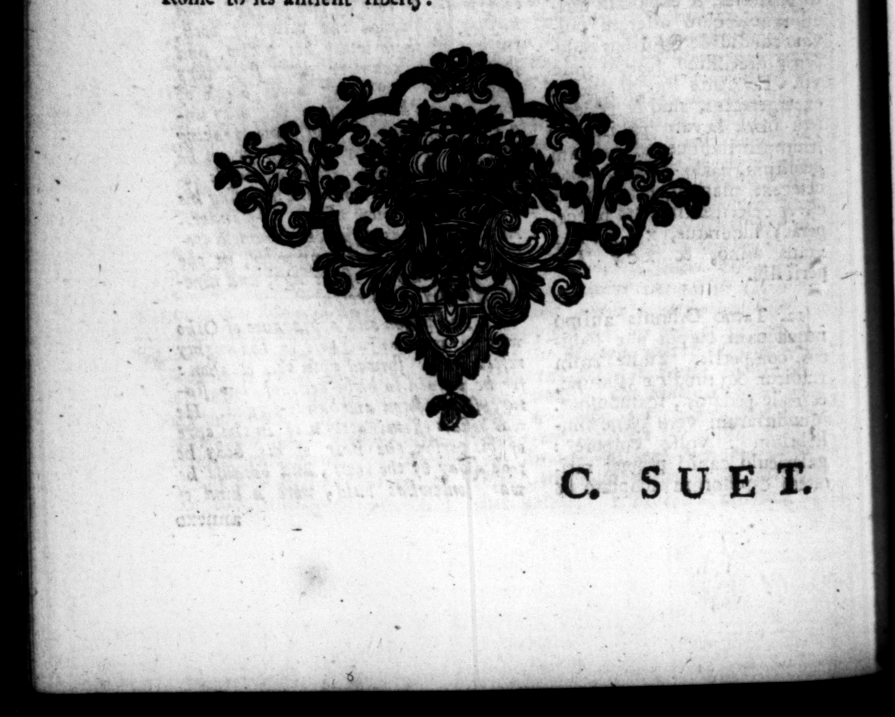

38 © $UVBT ut nemo dignoſcerer, Gia 8 fac iem quotid ie raſi- 10 tare, ac pane madido: linere fi U con ſuetum : idqus inſtituiſſe t f A prima ine, ne barba- w tus un qua — Dacen eti · n app: ED 3.” weeks iolsque valt am A) {le Per qua fadtum pu- _ publick! tom, ut mors ejus minime con| army vite, axjori miraculo ucrit. Multi præſentium milicum cum plurimo fletu ma» nus ac pedes jacentis exoſculae ti, fart iſimum virum, uni um Imperatorem predicames, ibidem ſtatim nee procul a rogo vim ſun vice. attulerunc, Multi & abſeatium accepto nuntio pre dolore armis inter ſe ad internecionem concurrerunt. Denique magna pars hominum, incolumem graviſ1j e deteſtata, mortuum laudibus talit: ut vulgo jactatum ſit etiam, Galbam ab ev non tam dominan1i, quam Reip. ac libertatis reſtituends cauſa in$eremeum. by him, not ſo much from a deſire to to its antient liberty. man, and an incomparable empe d [2 If more at his death /o & L table. to bys life. Many of the ſoldiers © then preſent, Kiſſng his hands and fer as he lay dead with abundance of tears, and celebrating him as a molt gallanc 2 immediately put an enato their own lines on the- ſpot, not far from his pile.” Many of them too that were at 4 difun, upeu hearing the news of his dead + inſomnch the common talk and. opinem, Thar Galba had been taken off reign himſelf, as to reſtore
